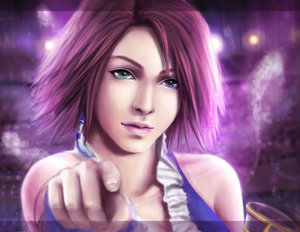

Forums galactiques > Taverne galactique : lieu de discussion informel > IZakaYa - L'alcool encore et toujours...
Pages : 1 2 ... 281 282 283 ... 308 309
| ash Réputation à la taverne : 165  25/03 ETU 15:59 | Score : 1 Détails Le commandant entra le saloon :
-Une limonade, barman. -Avec ou sans bulle? Lui fit le barman. Hé: PAF!! Il frappa le barman. -Insolent, je vais t'apprendre à me manquer de respect! C'est alors que le mec voulut frapper le commandant, mais celui-ci se baissa et son voisin reçu la pêche. Alors une grande bagarre éclata quand alors 4 despérados arrivèrent et tuèrent tout le monde sauf le commandant qui s'était caché derrière une caisse portant les initiales NT. -C'est lui, c'est lui. Fit un des bandits en repérant le commandant qui était en train de s'enfuir. Les despérados tirèrent partout à coup de colts quand une balle fit exploser la nitro. Le commandant eu juste le temps de sauter dans sa frégate et vit de haut la ville exploser. -Heureusement, j'ai pu sauver cette bouteille de Loch Lomond. Fit le commandant. | ||
| Glokzy Zounourss Réputation à la taverne : 228  25/03 ETU 16:56 | Score : 0 Détails Glokzy qui venait de se faire tuer, ressuscita puis commanda un superchapsipastis pour se consoler. Sa montre n'avait pas l'air d'impressioner quiconque...
J'ai plus qu'à la filer au chat. se dit-il. Et il partit en direction de chez Macastril le vilain manipulateur pas beau. | ||
| Lothan Réputation à la taverne : 17  25/03 ETU 22:04 | Score : 0 Détails Lothan entra dans l'IZakaya. Il regarda autour de lui et vit le bar quasiment vide
Cet endroit est décidément encore plus vide que les gradins de spectateurs pour la finale inter-village de course d'orientation pour jeune filles. Et en plus, le bar est complètement explosé. Il secoua la tête avant de s'approcher du bar et saisir quelques bouteilles et se confectionner un Gargle-Blaster Pan-galactique. | ||
| Rudrig Del Fortuna Réputation à la taverne : 23  25/03 ETU 22:17 | Score : 0 Détails Rudrig poussat les portes de l'IZakaYa. Une fois de plus, le bar était vide, enfin presque. Il y avait seulement quelques poivrot décuvant dans les coins et Lothan. A la vue de son cocktail, le commandant attrapat les mêmes bouteilles et remplis son verre, mettant les doses comme cela lui convenait.
| ||
| Jack Réputation à la taverne : 64  26/03 ETU 18:48 | Score : 0 Détails Une cloque arrivat dans le bar et s'assit a coté de Lothan,Jack lui vomit dessu,garde son aide normal:
-HEEEE,HIC... SI J'TE VOMIE DESSU,CEST PARCE QUE HIC....PARCE QUE...BAMMM ROMPSHITTTTT | ||
| Enayla Réputation à la taverne : 9  26/03 ETU 19:13 | Score : 4 Détails Enayla entra dans le bar en pensant revoir l'homme, le Dr.Jackail. Quand elle fût entrée elle ne l'aperçut point. Déçue elle alla s'asseoir et commanda une vodka bien serrée pour faire passé le temps...
| ||
| Dr.Jackail Réputation à la taverne : 3  26/03 ETU 19:37 | Score : 1 Détails *Jackail entra dans le bar...désormais sa visite était journaliére car il éspérait toujours LA voir...Lorsqu'il vit celle pour qui il venait son coeur se serra. Il se raprocha d'elle, lui aposa un baiser sur la main puis lui ofrit un bon café*
-Comment allez vous depuis hier miss ? J'espére que vous avez bien récupérer de cette formidable soirée. J'ai une proposition a vous faire: Que diriez vous de venir passer quelques jours en mon royaume que je vous fasse gouter a la sobriété et au plaisir simple de mon empire médical...Peut être voudriez vous voir mes sources chaudes et mes jardins curatifs ? | ||
| Enayla Réputation à la taverne : 9 26/03 ETU 20:20 | Score : 2 Détails Quand le doc lui baisat la main (oui oui, c'est que la main^^) Enayla rougitt un peu, le Dr.Jackail lui fit remarqué qu'elle était encore plus belle avec ses pomètes colorés...Ne sachant pas quoi répondre à l'invitation du Doc elle bégaya un peu en disant...
** - Heu...Oui, pourquoi pas ? Mais je ne pourrais visiter vôtre demeur bien longtemps car mon peuple aura toujours beosin de moi ! ** | ||
| Dr.Jackail Réputation à la taverne : 3 26/03 ETU 20:44 | Score : 1 Détails *Jackail tout content de la réponse de son amie sautillait sur place en sortant de l'izakaya. En sortant il s'adressa à Enayla*
-Prévenezmoi de votre arrivée ! Je vous ferais organiser la plus belle haie d'honeur que mes 700 000 CLA sont capable ! en attendant laisser moi organiser votre visite. *Au détour d'une ruelle il contacta son chef des réseaux et de l'information* -Commandeur, veuiller mettre a la protection de Miss Enayla 50% de vos effectif sur le champs ! -Mais commandants cela représente plus de 20 millions d'agents mecanoïdes ! -JE LE SAIS CESSER DE DISCUTER MES ORDRES ! De plus veuiller a ce qu'il reste discrets et prompt. Service ! -Service commandant ! *Ragallardi a la pensée de voir sa bien aimée en visite pour quelques jours, Jackail se dirigea vers son vaisseaux tout en chantant (http://www.radioblogclub.com/open/34481/neil_leyton/Neil%20Leyton%20-%20Shake)* | ||
| Philippe Delarge Réputation à la taverne : 7  27/03 ETU 20:48 | Score : 0 Détails Philippe DeLarge entra dans l'IZakaya. Il alla au bar et commanda un verre de lait. Puis il se tourna vers la salle et observa les chaises vides, le commandant qui s'était apparemment endormi avec du vomi d'animal sur le tabard. Il haussa les épaules et préféra se retourner vers le bar, commander un autre verre de lait.
| ||
| Dr.Jackail Réputation à la taverne : 3 27/03 ETU 21:22 | Score : 1 Détails *Jackail rentra au bar et s'assit dans un coin en attendant sa Enayla qu'il ne quittait point de l'esprit. En passant il salua rapidement Mr delarge, commanda un redtantra pour se réchauffa et fila s'assoir.*
-Ahhhh les femmes... | ||
| galactor Réputation à la taverne : 307  27/03 ETU 21:26 | Score : 1 Détails Galactor, qui n'était pas venu faire un tour en ces lieux mytiques depuis quelques temps deja, vint se ressourcer un peu avec les actions des ses derniers jours.
Il traversa toute la salle pour aller s'accouder a son petit coin de bar personnel. Il commanda un Astro-Pastis, pour changer un peu a la blatte de service déçu de ne pas voir le newby puis remarqua un homme etrange a l'autre bout du comptoir. Pour etre etrange, il l'était, trespeu de personnes pouvaient se venter de boire du lait dans l'Yzakaya sans y incorporer quelques pilulles rouges. Il prit donc son verre de Pastis et alla s'installer au coté du nouvel arrivant. Bien le bonjour monsieur, il ne me semble pas avoir deja eu le privilege de vous voir en cette enceinte. Je me presente, Galactor, l'un des plus anciens clients que cette taverne compte. Et moi a qui ai-je l'honneur? | ||
| Lotto Réputation à la taverne : 46  27/03 ETU 22:20 | Score : 0 Détails Une silhouette élancée se glissa à l'intérieur de l'IZakaYa,sans un bruit.
Même la porte ne cilla pas à son passage... Lotto posa pour la première fois le pied sur le parquet vétuste de l'établissement, arborant comme à son habitude un intriguant sourire en coin... Ses cheveux blonds platine mi-courts flottant sur sa nuque, il s'approcha silencieusement du comptoir,et tira un tabouret. D'un ton léger,il interpella l'insecte qui semblait être responsable du service et lui commanda un gin sans se soucier de savoir si la créature le comprenait. Il tourna la tête pour entrevoir les deux personnes assises à ses cotés. Il laissa échapper un rire léger... | ||
| Araskel Réputation à la taverne : 396  27/03 ETU 22:20 | Score : 2 Détails Des bruits atroce sortent de la chambre rouge ...
Des cris suraigus suivit de bruits sourds regulier emplissent la taverne...râle de plaisir, frottements de chairs et hurlement de jouissance en emane a chaque seconde... du plâtre tombe du plafond en poudre, ca a l'air violent tout ca... Pourtant, les clients actuels de l'Izakaya ne semblent guere s'interressé au astro-putes pourtant renommée...Aors qui? "AAAAAAAAAAAAAAaaaaaaAAAAAAAAAAaaaaaaaa....." Ca, c'était le cri d'un homme qui vient de hum...se satisfaire. Une claque sur de la chair se fait entendre. Puis une voix graveleuse resonne dans la salle. "C'est ca cherie, dort,tant que ton jolie petit c*l reste ici...hmm, plus que jolie meme.... nondidiou ca m'as donné soif!" Une porte s'ouvre et claque, et quelqu'un devale les escaliers. Deboule alors dans la salle un geant brun, vétu d'une combinaison de latex rouge quasi integrale ne laissant a l'air libre que sa tete, avec marqué sur le torse en pourpre sombre RED T FOREVER . Il tient dans sa main ganté un thermo degoulinant d'astro pastis. Il s'assoit derriere le comptoir, apres avoir descendu une partie du thermo. Il s'essuis son front de sueur et apercoit alors Galactor: "Eh! regarde ce que t'as oublié la derniere fois! Hurle t'il a l'interressé, en agitant le thermo tandis que la blatte sert le gin a un nouveau client. | ||
| Philippe Delarge Réputation à la taverne : 7 28/03 ETU 17:10 | Score : 4 Détails Philppie DeLArge mit un certain temps à se tourner vers Galactor. Sa tête tomba sur le coté et ses yeux gris scrutèrent Galactor comme un savant fou regarderait naitre un monstre de sa composition. Son visage ascétique se fendit d'un large sourire et il tendit la main à son interlocuteur:
Philippe DeLarge, Stourmaïster de Nadsat. Lucliche de vous renconter, très lucliche. J'ai souvent entendu sprécher de vous. Je suis moi-même peu bécanté dans cet endroit, c'est la érsté fois que j'y viens. Je suis ici pour la érsté fois. Leur lait est vraiment costliche! Galactor sembla un peu dérouté par les manières étranges de son interlocuteur, mais il n'en laissa rien paraître. Vous vaïssez, c'est très embêtant, chez moi, les bars ne sont ofnés que le mardi, le jeudi et le mardi. C'est très embêtant. | ||
| Amorin Réputation à la taverne : 44  28/03 ETU 21:36 | Score : 0 Détails Le commandant Amorin apparut...
Il retira sa veste noire, laissant apparaitre un pull noir et un jean abimé, puis s'installa sur une chaise. "Une pinte de bière s'il vous plaît !" La taverne était calme. Il sortit un bout de papier et se mit à griffoner dessus nerveusement... | ||
| galactor Réputation à la taverne : 307 28/03 ETU 21:44 | Score : 2 Détails Stupéfait, Galactor hesita quelques peu a serrer la main de son interlocuteur aux manieres....peu communes.
Apres un petit temps d'arret, il saisit la main, la secoua de bas en haut tres furtivement, puis se retira en un eclair, on ne sait jamais ! Pour se remettre de ses émotions, il saisit son Astro-Pastis et le descendit d'un seul trait. Prrrrr, pouah c'est pas frais ce truc, ou est ce qu'Araskeliloulinet a mis ma... A cet instant il aperçu Araskel, combinaison de latex sur le derriere, preservatif dans une main, et dans l'autre le GALAC-THERMO. Galactor ne fit ni une ni deux, il sauta par-dessus le comptoir et se jetta sur l'usurpateur ! Rends moi ça espece de salop, c'est a moi, y'a que moi qui ai le droit ! Si j'arrive a te bloquer tu vas passer un sale quart d'heure. En effet, la combinaison de latex rendait la tache bien difficile au pauvre homme assoiffé.Se tournant vers l'ahuri je precise pour ceux qui ne comprenne pas qu'il s'agit de philippe Delarge, ou dirais-je LeBarge qui assistait a la scene: Mais bouge toi au lieu de me regarder comme ça, aide moi a le chopper, je te payerais a boire ! | ||
| Kordek Réputation à la taverne : 62  28/03 ETU 21:59  | Score : 1 Détails Kordek entra d'un pas nonchalant dans la taverne, décidé à passer du bon temps en compagnie (si possible) d'une charmante damoiselle (si possible) pas farouche pour 2 sous.
ET la, que vit-il ? GALAC ! Ma couille en silicone ! Qu'est-ce tu branles de joyeux sur le coup ? Un mec en latex? Oula, il y va fort ton pote, d'habitude le latex ca dépasse rarement la ceinture.... 'Fin bref, j'suis content d'te voir ! T'as besoin d'aide pour ton nouveau pote, ou tu t'débrouilleras tout seul ? | ||
| Araskel Réputation à la taverne : 396 28/03 ETU 22:04 | Score : 1 Détails "Qui c'est qui t'as offert le thermo d'abords? hein? hein? et puis j'ai le droit d'en boire une gorgée..."
Joignant le geste a la parole, Araskel approcha doucement le thermo de sa bouche, sans faire attention au visage a la fois terrifié et courroucé de Galactor... | ||
| Amorin Réputation à la taverne : 44 28/03 ETU 22:07 | Score : 0 Détails Amorin détouna les yeux et trouva que ce qui se passait autour de lui était absolument passionnant.
"On croise de drôles d'oiseaux ici",pensa-t-il. Il commanda une autre bière... |
Pages : 1 2 ... 281 282 283 ... 308 309
Forums galactiques > Taverne galactique : lieu de discussion informel > IZakaYa - L'alcool encore et toujours...